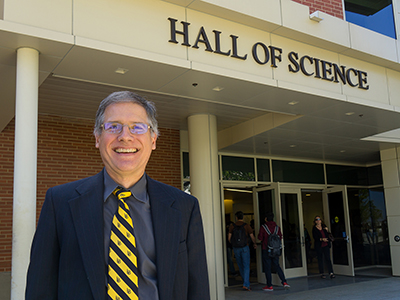

The College of Natural Sciences and Mathematics is pleased to announce that Dr. Curtis Bennett started as
the college's new Richard D. Green Dean on July 31, 2017. Dr. Bennett is a nationally recognized mathematician
with a well-developed understanding of the full range of the responsibilities of a dean of Natural Sciences
and Mathematics within the CSU. Welcome, Dr. Bennett!

CNSM students and faculty use what they learn to reveal the world about us. At every level of study,
from Chemistry 100 through top notch research done in faculty laboratories and field sites our scholars
and researchers are pursuing answers to their questions. This semester's Chemistry 100 students in Dr. Elaine Benal's
class proved this when they carried out water testing on campus water fountains and found lead in the Macintosh
Humanities water pipes. The campus has responded by providing alternate water sources until the affected plumbing
can be replaced. Local news agencies reported on the findings of the students.
Our faculty are pursuing innovation through research and notable findings are published in the Fall 2017 Issue of Quest:
Biochemist Dr. Deepali Bhandari is researching the response in cancer cells to thrive, not die when experiencing endoplasmic reticulum stress.
Evolutionary Biologist Dr. Theodore Stankowich seeks answers to a basic question: why are some animals black and white? His latest study is the panda.
Physiologist Dr. Douglas Pace is focused on understanding the physiological energetics of marine invertebrate larval development. His current spotlight is
studying a parasite, Toxoplasma gondii that live in human 'host' cells.